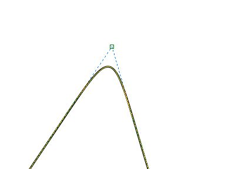
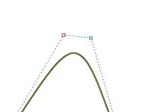
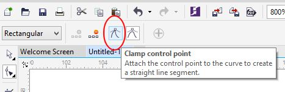
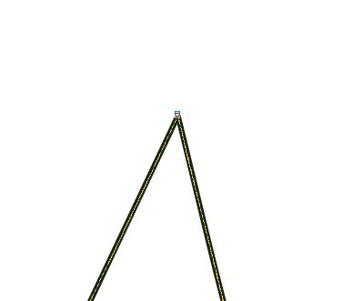

ВОПРОС / ОТВЕТ ДЛЯ НАЧИНАЮЩИХ
polzovatel-902 / 13.07.2010, 09:21/00:41
Форум:
Объясню на примере, чтоб было понятней... Открываю в кореле картинку (футболку с надписью) в формате JPG, мне нужно вытянуть из футболки надпись, т.е разъеденить файл... Говорят нужно формат изменить, еще что-то... Объясните, пожалуйста, что нужно сделать для этого...? Заранее спасибо.
delete
Baryga88, Согласна, Х7 приятнее и работает быстрее.... будем думать, может добавят в следующих версиях....эх
Выяснилась любопытная деталь, которая может быть заставит Вас, NatalySeed, передумать в пользу Х7 :-) :-). Когда вы сделали линию с помощью B-spline и при этом используете Alt + Shift (чтобы комп не чирикал), потом переключаетесь на инструмент Shape (F10). У вас будет картинка, как на рис. 1.

На самом деле, этот узелок является двумя узлами наложенными один поверх другого. В этом легко убедиться, потянув узелок в сторону инструментом Shape (рис. 2).

Дык вот... Чтобы выделить эти наложенные друг на друга узелки, нужно их выделить, просто обведя их инструментом Shape, иначе выделится только один из них. На Панели свойств инструмента Shape щелкаете кнопку Clamp control point (рис. 3).

И получаете счастье - острый угол (рис. 4).

подскажите ,пожалуйста, какже импортировать объект из файла(это отсканированный документ,на нем рисунок,который нужно поместить на рабочий лист в кореле). Я пробовал просто открыть этот файл в кореле(не знаю какое у него разрешение),но потом когда он оказался в рабочей области-весь этот файл программа понимала как объект и рисунок на нем отдельно не выделить.,я думаю-я понятно объяснил.???и можно ли будет с этим рисунком работать как с векторным пространством???
mistercrown46. Ну-у... вопрос немного неуместный... Сканированный рисунок - это растровое изображение и соответственно в Корел он является одним растровым и не редактируемым (в полном объеме) объектом. Для работы с растром предназначен Photo-Paint. К тому же на отсканированом изображении нет "отдельных частей" - это одно целое изображение. Поэтому непосредственно в самом CorelDraw вы можете туда что-то добавить свое или "скрыть" часть изображения, наложив векторный объект поверх. И так далее, в том же духе. CorelTrace..., ну не знаю..., меня эта идея не сильно вдохновляет...
Baryga88, спасибо) теперь намного легче)
Доброго времени суток! Вопрос такой. Я новичек в векторной графике, но есть большой опыт работы в фотошопе. Когда приходится работать с вектором, использую corel x5. Появилась потребность изучить векторную графику подробнее. Первая мысль была сосредоточиться на кореле, но возникло предположение, что по части интеграции с фотошопом лучше будет перейти на иллюстратор, т.к. эти программы делает один производитель, и вероятно в фотошопе организована хорошая поддержка иллюстратора. Вопрос собственно такой, что изучать, корел или иллюстратор, чтобы в дальнейшем работу можно было перевести в фотошоп? Есть ли в этом приемущество у иллюстратора, или все таки удобство корела в других вопросах имеет большее значение?
mobetoh, все векторные и графические редакторы одинаковы совершенно. Отличие минимальны. В интерфейсе и количеством решений задачи, где то это 2-3 варианта которые дадут 1 и тот же результат, где 3-4 варианта... Привыкнут и изучить лучше каждый, так как именно эти разные решения задач иногда помогают реализовать то, что в других редакторах сложнее. Я бы Вам советовал после фотошопа остановиться на иллюстраторе, и по мере возможности пробовать работать в короле. Импорт и экспорт среди большинства редакторов проходит хорошо.
Страницы